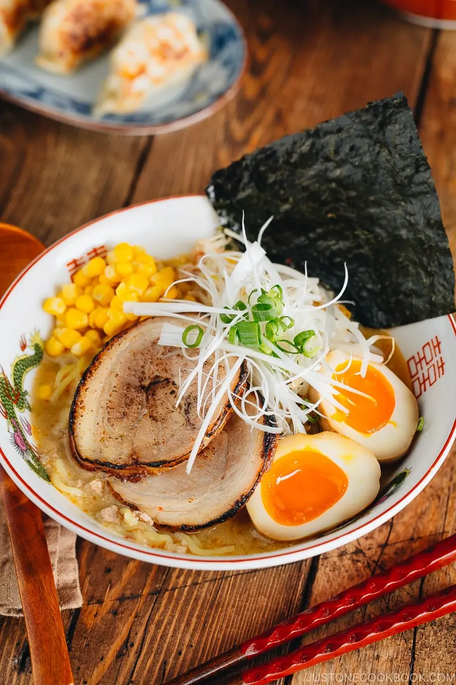

Miso Ramen
- Total time25 mins
- Serves2
- Ingredients21
- Steps17

Ingredients
For the broth
- 2 cloves garlic
- ½ tsp ginger (grated)
- 1 shallot
- 1 Tbsp toasted white sesame seeds
- 1 Tbsp toasted sesame oil
- ¼ lb ground pork (use meat alternatives or chopped mushrooms for vegan/vegetarian)
- 1 tsp doubanjiang (spicy chili bean paste)
- 3 Tbsp miso (most types will work except Saikyo and Hatcho varieties; each type will create a slightly different broth flavor)
- 1 Tbsp sugar
- 1 Tbsp sake
- 4 cups chicken stock/broth (use vegetable stock for vegan/vegetarian)
- 1 tsp Diamond Crystal kosher salt (to taste)
- ¼ tsp white pepper powder
For the ramen noodles
- 2 servings fresh ramen noodles
For the toppings
- Homemade Chashu (Japanese Braised Pork Belly)
- Spicy Bean Sprout Salad
- Ramen Egg (Ajitsuke Tamago)
- frozen or canned corn (drained)
- nori (dried laver seaweed) (cut a sheet into quarters)
- green onion/scallion (chopped)
- Shiraga Negi (julienned long green onions)
Directions
- Gather all the ingredients.
- Mince or press 2 cloves garlic (I use a garlic press) and add to a small plate. Then, grate the ginger (I use a ceramic grater) and add ½ tsp ginger (grated) to the plate.
- Mince 1 shallot and add to the plate and set these three prepared ingredients aside.
- Grind 1 Tbsp toasted white sesame seeds, leaving some seeds unground for texture. Set aside.
- Preheat a medium pot over medium-low heat. When it's hot, add 1 Tbsp toasted sesame oil. Then, add the garlic, ginger, and shallot.
- With a wooden spatula, stir-fry until fragrant.
- Add ¼ lb ground pork and increase the heat to medium. Cook the meat until it‘s no longer pink.
- Add 1 tsp doubanjiang (spicy chili bean paste) and 3 Tbsp miso. Quickly blend well with the meat before they get burnt.
- Add the ground sesame seeds and 1 Tbsp sugar and mix well.
- Add 1 Tbsp sake and 4 cups chicken stock/broth and bring the mixture to a simmer.
- Taste your soup and add up to 1 tsp Diamond Crystal kosher salt (if necessary) and ¼ tsp white pepper powder. Tip: Each brand of chicken stock varies in saltiness, so you must taste your soup to decide how much salt to add.
- Your soup broth is now done. Cover with the lid and keep the soup broth simmering while you cook the noodles.
- Bring another large pot of unsalted water to a boil (ramen noodles already include salt in the dough). When the water is boiling, ladle some of the hot water into the individual ramen bowls to warm them up. Meanwhile, gently shake 2 servings fresh ramen noodles with your hand to separate and loosen them up.
- Cook the noodles according to the package instructions. I usually cook the noodles al dente (about 15 seconds less than the suggested cooking time). Before your noodles are done cooking, empty the hot water from the warmed ramen bowls.
- When the noodles are done, quickly pick them up with a mesh sieve and shake out the excess water. Make sure to drain the water well, as you don’t want it to dilute your soup. Serve the noodles into the warmed bowls.
- Add the piping-hot ramen soup broth to each bowl.
- Place the toppings of your choice on the ramen noodles and serve immediately. Add the optional condiments to your Miso Ramen and enjoy.
Recipe credit: justonecookbook.com